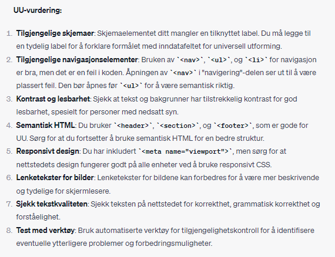
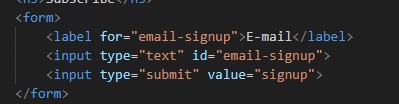
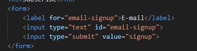

| Lighthouse | Webaim | ChatGPT |
|---|---|---|
Index
SEO anaylsen viser at forside-siden på mobil mangler meta-attributter som skal kort oppsumere sidets innhold, og gjøre den enklere å søke etter. Forsiden på fesktop mangler de samme meta-attributtene og gjør at siden ikke har noen beskrivelse. 
Lighthouse analysen av best practices viser til at siden kan bli forbedret ved forandring av bredde og høyde på enkelte bilder. Noen av bildene har ikke godt forhold mellom bredden og høyden som kan forårsake ulike problemer ved bildestørrelsen på for eksempel ulike enheter. 
Som på mobilsiden har også bildene på desktop noen feil på bildenes bredde/høyde forhold. Katalog
Som på forsiden, har heller ikke katalogsiden noen meta-attributter som gjør det vanskelig å forstå hva siden inneholder ved første søk. Som ovenfor på mobilsiden, mangler også desktop versjonen de samme meta-attributtene. 

ProduktProduktsiden er ingen unttak og mangler også meta-attributtene. Produktsiden på desktop inneholder heller ingen meta-attributter. 
|
Index
På forsiden viser webaim at nettstedet inneholder 11 feilmeldinger, 4 kontrast feil og 10 advarsler med ting som må eller burde forbedres. Dette er for et meste labels eller andre ting som mangler. Katalog
Webaim viser til 11 feilmeldinger, 1 kontrast feil og 8 advarsler på katalogsiden. De fleste feil er at label og annet er mangelfulle. ProduktProduksiden har 11 feilmeldinger og 9 advarsler som viser til mangelfulle labels og annet. |
Index

ChatGPT vurdering av SEO og UU på nettstedets forside. Katalog
ChatGPT vurdering av SEO og UU på nettstedets katalogside. ProduktChatGPT vurdering av SEO og UU på nettstedets produktside |
Sammenligning: Ved analyse gjort av både ChatGPT og Webaim er det mulig å se om SEO og UU burde ha noen forandringer/forbedringer. Vurderingen ved bruk av disse to verktøyene har kommet ut ganske lik, både ChatGPT og Webaim reagerer mest på at koden mangler label og linker ikke er fullstendig. Alle analysene reagerte i tillegg på at det var mangelfulle metatags i koden og at det måtte fikses på.
Forbedrende tiltak
Den første forandringen skjer på toppen av hver side i metataggene der jeg skrev inn ulike meta-attributter for å forbedre SEO.


Det neste steget i forandringen var å gjøre rede på at lenketeksten til de ulike navigeringsknappene skal være mer informative. Alle sidene inneholder samme navigeringsknapper.

Analysen viste i tillegg at koden inneholdte noen uavsluttede a tagger som nå ble avsluttet.

På noen steder var ikke koden fullstendig semantisk riktig, gjennom analysen har den nå fått riktig plass. Nav taggene som skal være på utsiden av lister ble funnet innenfor som er feil. Denne delen av koden er lik på alle sidene.

I følge analysen har også kontrasten og lesbarheten hatt plass til forbedring. Fargen på teksten kan være for lik bakgrunnen på noen steder som kan gjøre det vanskelig å lese. Teksten ble forandret til en mørkere farge som har mer kontrast fra bakgrunnen.

Det neste steget til forbedring er å fikse labels i koden, labels var ikke fullstendig som stoppet de fra å være tilgjengelig og mer brukervennlig. Disswe labels taggene er like på alle sidene.

 

For å forbedre koden enda mer trenger noen av lenkene tittler for å få mer informasjon om hvor lenkene leder. Alle lenkene var like på samme sidene.

Analyse etter forbedrended tiltak
| Lighthouse | Webaim | ChatGPT |
|---|---|---|
IndexSEO på forsiden analysert av lighthouse er nå nesten på 100. Det siste problemet er at den synes størrelsen kunne bli på den ene knappen i menyen. Det samme gjelder SEO på forsiden på desktop. KatalogProdukt |
IndexKatalogProdukt |
IndexChatGPT vurdering av SEO og UU på nettstedets forside etter forbedrende tiltak. KatalogChatGPT vurdering av SEO og UU på nettstedets katalogside etter forbedrende tiltak. ProduktChatGPT vurdering av SEO og UU på nettstedets produktside etter forbedrende tiltak. |
Skjermleser og tastaturnavigasjon
Skjermleserkompatibiliteten funker bra og kan fungere sammen med tastaturnavigasjon. Skjermleseren leser ikke opp funksjonelle knapper og leser opp "kobling" før hvert knappnavn. For tastaturnavigasjonen ble det brukt tab og skift + tab og går over på hver funksjonell knapp.